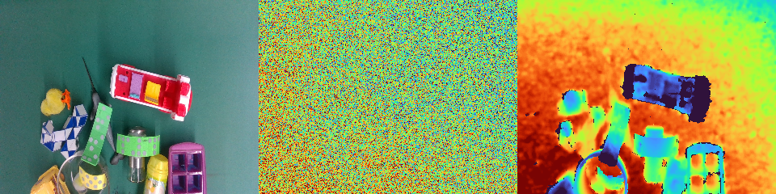
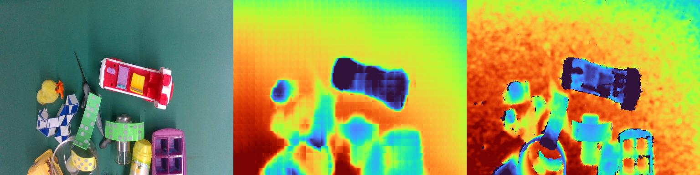

01Problem
Transparent and specular objects break classical depth sensing outright — stereo, ToF, and structured light all need a consistent surface return, and glass or clear plastic doesn't give them one. PointDiT proposes solving this with a diffusion ViT that denoises raw XYZ point maps directly, skipping the usual depth-map + lossy-VAE detour other generative approaches take.
This project reproduces that idea from the public project page (no official code or weights exist) and adds a second, harder constraint on top: it has to run in real time on a 2-TOPS edge NPU, not a GPU. That constraint forced a real architectural fork away from the paper, described below.
02Method
The architecture keeps PointDiT's core idea: patchify the point map with XYZ as channels (exactly like RGB), concatenate with tokens from a frozen image encoder (DINOv2/DINOv3), and denoise with a plain ViT using joint self-attention and AdaLN-Zero timestep conditioning.
On real training data, however, 1-step diffusion sampling plateaued around object-correlation 0.55 with visibly noisy output — going from pure noise to a clean point map in one step is intrinsically hard, and TransCG's ground truth is a single deterministic depth capture, not a distribution to sample from.

The fork: deterministic regression, not diffusion
Swapping the 1-step sampler for a deterministic head — zero input,
t=0, a single forward pass, no sampling loop — took object correlation
from 0.55 → 0.92 outright on the same data and architecture. It's
also strictly better for the NPU: one forward pass instead of a diffusion loop.
The rest of the network was redesigned around what RKNN can actually place on the NPU: BatchNorm instead of LayerNorm (folds into the preceding conv), ReLU instead of GELU, and — after an A/B that genuinely surprised us — softmax attention instead of a cheaper linear-attention variant, because the linear variant NaN's under fp16 on real data while softmax converts to RKNN with only one remaining CPU op and is more accurate besides.
03Results
Object-component correlation on TransCG after plane-detrending the ground truth (removes the flat table plane, which otherwise dominates and hides real progress on the objects themselves).
| Stage | Object corr. | Transparent-only |
|---|---|---|
| 10 scenes, diffusion | 0.38 | 0.04 |
| 20 scenes | 0.53 | 0.16 |
| 130 scenes, diffusion → regression | 0.73 | 0.20 |
| 130 scenes + longer training | 0.842 | 0.448 |
| + high-resolution token grid | 0.895 | 0.730 |
| Held-out generalization (52 unseen scenes) | 0.884 | 0.876 |

04RK3588 deployment
The 320×240 regression model converts through ONNX → RKNN with exact onnxruntime parity. Simulated (x86) accuracy of the converted graph:
| Precision | Object corr. | Transparent | Size |
|---|---|---|---|
| PyTorch fp32 (reference) | 0.848 | 0.817 | — |
| RKNN fp16 | 0.848 | 0.817 | 80.4 MB |
| RKNN INT8 | 0.750 | 0.706 | 43.5 MB |
fp16 conversion is bit-for-bit equivalent to the PyTorch reference. INT8 loses ~0.10 correlation; per-layer analysis showed 305/309 layers individually quantize cleanly (cos ≥ 0.99) — the loss is small error accumulating across network depth, not a few bad layers, so hybrid fp16/int8 quantization didn't recover it. Deployment defaults to fp16 when accuracy matters and INT8 when size/speed matter.
On-device FPS on real RK3588 hardware is not yet measured — this project has GPU-only compute and no physical board; the numbers above are from RKNN's x86 simulator.
05Takeaways
- Match the sampler to the data. 1-step diffusion is the right formulation when ground truth is genuinely multi-modal; TransCG's deterministic captures made regression both simpler and dramatically more accurate.
- Standard metrics can lie about progress. Raw correlation looked saturated at several points in this project; plane-detrending the ground truth revealed the object signal was still climbing underneath.
- NPU-friendly doesn't mean "cheapest op." The linear-attention variant looked better on paper for a 2-TOPS NPU, but softmax attention won an A/B on both stability and accuracy — worth measuring, not assuming.